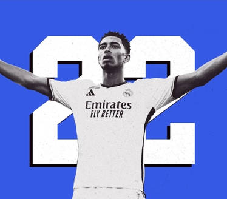
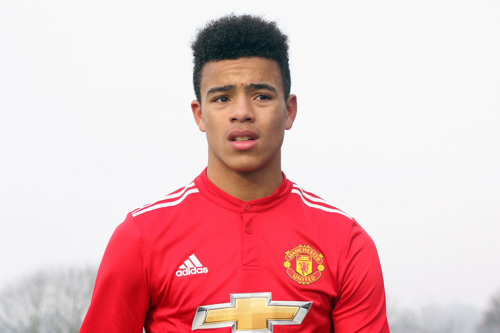

1.Belligham, jugador procedente del Borussia de Dormuntd fichado por 180 millones de euros

2.Juanmi, jugador con propiedad del Betis pero esta temporada salio cedido a arabia, tras rescindir su contrato en arabia, el Betis lo cedió al Cadiz
3.Greenwood, jugador del Manchester United, que salió cedido al Getafe
4.Oriol Romeu, jugador que vuelve al Barça, tras pagar 3,4 millones de euros al Girona

5. Sorloth, jugador que tras su paso por España, con una buena temporada en la Real Sociedad, el Villareal lo ficha por 8 millones de euros